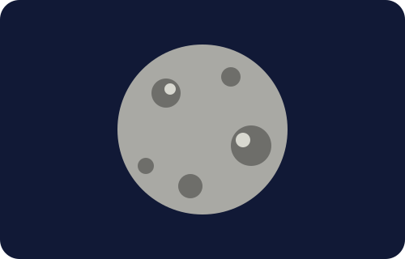

☿ ดาวพุธ
เนื้อหาความรู้เกี่ยวกับดาวพุธ

ลักษณะทั่วไป
ดาวพุธเป็นดาวเคราะห์ที่อยู่ใกล้ดวงอาทิตย์ที่สุด และเป็นดาวเคราะห์ที่มีขนาดเล็กที่สุดในระบบสุริยะ มีพื้นผิวเป็นหินและเต็มไปด้วยหลุมอุกกาบาต
ข้อมูลสำคัญ
พื้นผิวมีลักษณะคล้ายดวงจันทร์ มีหลุมอุกกาบาตจำนวนมาก รวมทั้งหน้าผาและพื้นที่ราบขนาดใหญ่
เพิ่มเติม
ดาวพุธแทบไม่มีบรรยากาศแบบโลก แต่มีชั้นก๊าซบางมากที่เรียกว่าเอกโซสเฟียร์ อุณหภูมิด้านกลางวันและกลางคืนแตกต่างกันมาก
ดาวพุธแทบไม่มีบรรยากาศแบบโลก แต่มีชั้นก๊าซบางมากที่เรียกว่าเอกโซสเฟียร์ อุณหภูมิด้านกลางวันและกลางคืนแตกต่างกันมาก
สิ่งที่น่าสนใจ
ดาวพุธใช้เวลาประมาณ 88 วันของโลกในการโคจรรอบดวงอาทิตย์ และประมาณ 59 วันในการหมุนรอบตัวเอง
ดาวพุธใช้เวลาประมาณ 88 วันของโลกในการโคจรรอบดวงอาทิตย์ และประมาณ 59 วันในการหมุนรอบตัวเอง